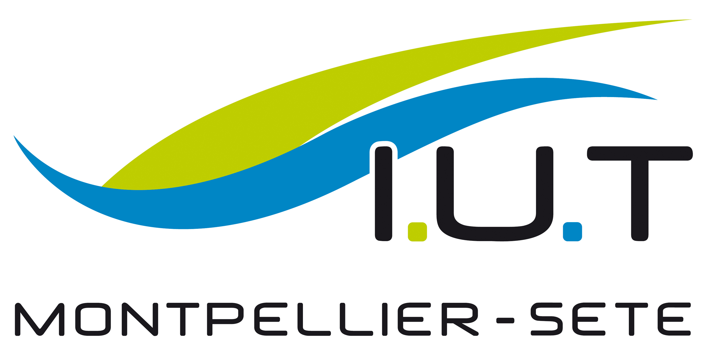

Qui sommes nous?
Nous sommes quatre étudiants de l’IUT de Montpellier, antenne de Sète: Adam, Geoffrey, Nathan et Hugo. Nous avons débuté nos études dans la branche Informatique la rentrée de septembre 2021. Dans le cadre de la SAE (travail en autonomie sous forme de groupes de 4 ou 5), il nous a été demandé de choisir chacun un sujet qui nous intéressait parmi la liste proposée, et les groupes seraient établis de cette manière là. Nous avons donc tous choisi sans aucune entente préalable le sujet de la controverse socio-technique à propos de l’utilité de la 5G. Et c’est comme cela que le groupe s’est formé. Étant pour certains débutants dans le domaine de l’informatique, et pour d’autres plus aguerris, ou bien certains étant plus à l’aise en rédaction, les rôles se sont tout de suite attribués par eux-mêmes et cela a permis une bonne entente globale dans le groupe. Après de multiples remises en question, de corrections globales et de longues heures de travail, nous avons le plaisir de vous partager notre site web, qui, on l’espère, vous plaira !